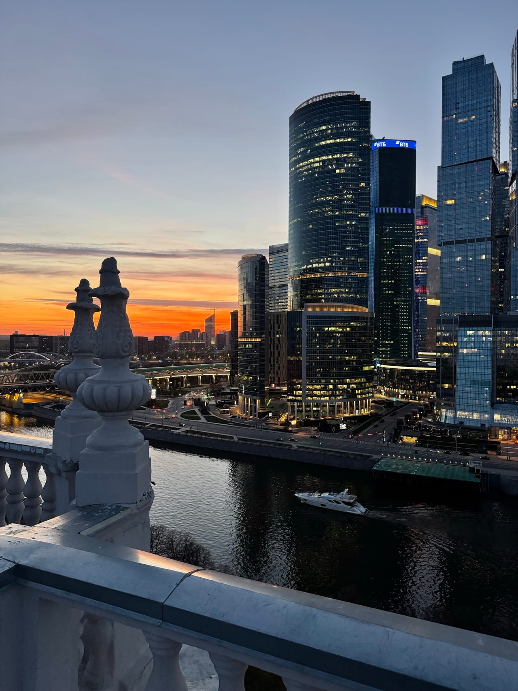

Статьи
Что видно с крыш Москвы: гид по главным ориентирам
С одних крыш Кремль читается на горизонте, с других башни Сити стоят прямо перед вами. Разбираем, какие ориентиры открываются с точек каталога и когда приходить за лучшим светом.
Перед первой прогулкой почти все спрашивают одно и то же: что видно с крыши Москвы и как выбрать точку под нужный кадр. Короткий ответ — всё зависит от района. В каталоге десять крыш у восьми станций метро, и у каждой свой набор ориентиров: где-то в панораму попадает Кремль, где-то башни Сити занимают полнеба, где-то вечером светится сталинская высотка.
Ниже — главные ориентиры и крыши, с которых они реально видны. Мы описываем только то, что есть на наших фотографиях с площадок, без преувеличений.
Кремль и собор Василия Блаженного
Кремль открывается с крыш восточнее центра. С крыши у метро Таганская в ясную погоду различимы башни Кремля и купола собора Василия Блаженного: они стоят далеко, поэтому лучше всего читаются на закате — как графичные силуэты на оранжевом небе. Бонус этой точки в том, что рядом в панораму попадают высотка на Котельнической, Москва-река и башни Сити на горизонте: классическая открыточная Москва в одном развороте.
Второй вариант — крыша у метро Курская: отсюда тоже виден Кремль, а компанию ему составляет высотка МИД. В сильную дымку дальние ориентиры теряются, так что за Кремлём лучше подниматься в прозрачный вечер.
Здесь важна честная оптика: Кремль с жилых крыш — это дальний план панорамы, а не вид из окна напротив. В этом и смысл — вы видите его не в упор, а в контексте целого города, с рекой и высотками вокруг.
Башни Москва-Сити
Если хочется стекла и вечерних огней делового центра, выбирайте запад города. Тут важно, с какой дистанции смотреть.
Три дистанции до Сити
- крыша у метро Фили — башни Москва-Сити целиком, удобная дистанция для панорамных кадров;
- «Фили 60 этажей» — деловой центр сверху: редкий ракурс, обычно Сити разглядывают снизу вверх;
- крыша у метро Шелепиха — площадка рядом с башнями: отсюда они не точка на горизонте, а огромные объёмы прямо перед вами.
Отдельного упоминания стоит крыша у метро Римская: с неё сталинская высотка и Москва-Сити попадают в один кадр — старая и новая вертикали города рядом. Лучшее время для Сити — сумерки, когда в башнях постепенно зажигаются окна и стекло начинает светиться.
Сталинские высотки
«Семь сестёр», построенные в 1947–1957 годах, с крыш видны выгоднее, чем с земли: на высоте их силуэты ничем не загорожены. Чаще всего в кадрах каталога встречается высотка на Котельнической набережной — её видно с крыш у метро Таганская и Новокузнецкая, а точка у метро Марксистская даёт закатный ракурс: шпиль на фоне вечернего неба.
Высотка МИД видна с крыши у Курской, гостиница «Украина» — со скатной крыши у метро Киевская, а с Римской одна из высоток встаёт в кадр вместе с башнями Сити. Приходите ближе к вечеру: у высоток включается подсветка, и они становятся главными героями панорамы.
Москва-река
Река держит кадр в любое время суток: вода ловит свет, по набережным идёт движение, мосты дают линии. Москва-река видна с крыш у метро Таганская и Новокузнецкая, открывается она и со скатной крыши на Таганской — там наклонные скаты задают другой характер прогулки, а река остаётся главным сюжетом. На закате это самый благодарный мотив даже для съёмки на телефон: лучшие виды Москвы с высоты почти всегда включают воду.
Когда приходить за лучшим светом
Универсальный ответ — за час до заката плюс первые полчаса сумерек. Летом закат поздний, и вечерние слоты разбирают быстрее. Если коротко, по времени суток расклад такой:
- закат — силуэты Кремля и сталинских высоток, тёплый свет на фасадах;
- сумерки — подсветка высоток и окна башен Сити, самый «открыточный» час;
- день — графичная и подробная панорама: свет более плоский, зато архитектурные детали рассматривать удобнее.
Вид на Москву с крыши сильно зависит и от прозрачности воздуха, а гарантий погоды на высоте никто не даёт — поэтому, если идёте именно за дальними ориентирами вроде Кремля, выбирайте день по прогнозу. Снимать можно на телефон, а можно прийти со своим фотографом — формат прогулки это позволяет.
Как увидеть всё это вживую
Все крыши из этого гида — организованные площадки: вы поднимаетесь с сопровождающим по проверенному маршруту, без поисков открытых дверей. Как устроен подъём на крышу в Москве и чем различаются форматы, мы разобрали отдельно, а если идёте впервые — загляните в гид о том, как попасть на крышу легально.
Точку под нужный вид проще всего выбирать по фотографиям в каталоге крыш: там собраны наши кадры с каждой площадки. Прогулка длится 1 час и стоит от 2000 ₽ за человека; если площадка свободна, можно продлить за 500 ₽ с человека за час. Адреса мы не публикуем — точное место встречи сообщаем после подтверждения записи. Записывайтесь через форму на главной или в Telegram-боте: напишите, какие ориентиры хотите увидеть, и мы подскажем крышу.
FAQ
Частые вопросы
С какой крыши видно сразу Кремль и Москва-Сити?
С крыши у метро Таганская: в ясную погоду различимы башни Кремля и купола собора Василия Блаженного, а башни Сити стоят на горизонте. На крыше у метро Римская другой сюжет — сталинская высотка и Москва-Сити в одном кадре.
В какое время суток вид с крыши выразительнее всего?
За час до заката и в первые полчаса сумерек: сначала золотой свет ложится на фасады, потом включается подсветка высоток и зажигаются окна башен Сити. Днём панорама подробнее, но более плоская по свету.
Можно ли заранее узнать, где находится площадка?
Адреса крыш мы не публикуем — точное место встречи сообщаем после подтверждения записи. Заранее известна станция метро, а виды с каждой точки можно рассмотреть на фотографиях в каталоге.
Над городом